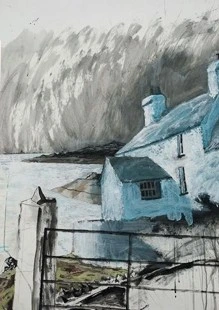

Huw Gareth Jones

Mae fy paentiadau wedi eu gwreiddio yn cymeriad tirlun ac adeiladau yr ardal.
Mae nhw wedi selio ar brasluniau a wnaed yn y man a’r lle mewn pensal, siarcol, dyfrliw, acrylig a cyfryngau cymusg.
I create paintings that are rooted in the character of the landscape and buildings of the area.
The paintings are developed from drawings done on the spot in pencil, charcoal, watercolour acrylic and mixed media.
01407 860244 / 07747 697842
huwjonesart@icloud.com
www.huwjonesart.co.uk
CILBWCH, RHOSCOLYN, LL65 2NQ
O Bont Rhyd y Bont troi am Rhoscolyn. Ar ol milltir troi i’r chwith am Silver Bay. Ar ol hanner milltir fforchio i’r dde wrth postyn gwyn . Dilyn ffordd fach i lawr, Cilbwch ydi’r ty olaf wrth y mor. Gallwch gerdded ar draws y traeth o’r Maes Parcio.
From Four Mile Bridge turn for Rhoscolyn. After one mile turn left for Silver Bay. After half mile fork right by a white post and speed bump. Follow the track down, Cilbwch is the last house by the sea. You can walk across the beach from the Car Park.